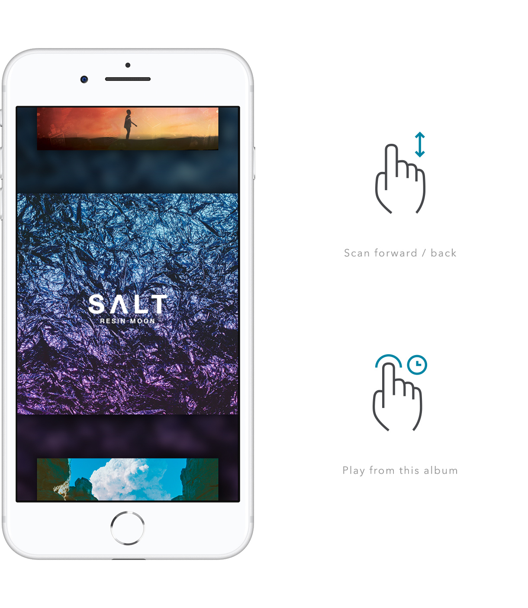

chriseddie.com / Scann
chriseddie.com / Scann
Scann is a gesture-based mobile application designed specifically for the blind or eyes-free use case. It introduces the concept of audible browsing where music is played at a given time interval (5-10s) before moving on to another point in a listener’s music library. When desired content is played the listener can force touch to pin that album and play from within it.

The concept of audible browsing allows the user to browse by what they hear, not what they see.
Once an album is pinned the listener can swipe left or right on the screen to skip between tracks within the album. When the listener is ready to return to browsing they simply force touch to unpin the album.
Pinned album view. Swiping left and right skips track linearly within the album.
Interaction prototype.
Date: June 2017
Company: Arboreal, LLC
Role: Designer
Team: 1 software engineer